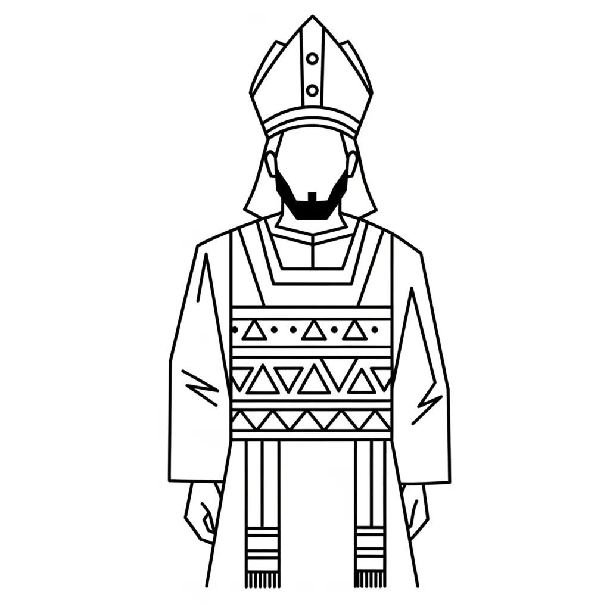

"And the Spirit of God was hovering over the face of the waters." — Genesis 1:2
"And all were baptised into Moses in the cloud and in the sea." — 1 Corinthians 10:2
In Neville Goddard’s psychological reading of Scripture, biblical figures do not record religious history. They personify functions of consciousness operating within the individual. Moses and Aaron together describe the priestly mechanism of the mind — not morality, ritual, or leadership, but how awareness relates to itself and stabilises an assumed identity.
Read alongside Romans 3, Saul’s conversion in Acts, and the priesthood described in Hebrews 7–9, Moses and Aaron reveal why early consciousness required mediation — and why that mediation later collapses.
Moses: Awareness Lifted Out of the Waters
Moses’ name means “drawn from the water”. Water, throughout Scripture, symbolises the undifferentiated mental field — thoughts, emotions, memories, and reactive patterns.
Moses therefore represents the faculty that lifts awareness out of unconscious identification and brings it into recognition of I AM.
By the time Moses appears, consciousness has already developed its core faculties: faith (Abraham), persistence (Jacob), imagination (Joseph), and praise or valuation (Judah). Moses is not a new faculty but an integration point — the moment the mind recognises the source from which these faculties operate.
This is why Paul can say that Israel was “baptised into Moses.” Psychologically, the mind is immersed into a new identity — awareness anchored in I AM rather than in appearances.
Moses and Speech: Knowing Without Dwelling
Exodus presents Moses as reluctant to speak. This is not a flaw. It describes a psychological truth: recognition of I AM does not automatically stabilise identity.
Awareness may awaken, yet the mind may still lack the capacity to remain, feel, and express that awareness consistently. This gap necessitates priesthood.
Acts 7 emphasises that Moses was “powerful in speech and action,” not because of eloquence, but because consciousness now knows the creative principle. Yet knowing alone is insufficient.
Aaron: Priesthood as Stabilisation of Identity
Aaron does not represent public ministry or external religion. He represents the inner priestly function — the faculty that dwells in, feels, and sustains the assumed state.
In psychological terms:
- Moses recognises I AM
- Aaron remains in it
This mirrors the pattern later clarified in Hebrews: early consciousness cannot yet abide permanently in awareness. It approaches indirectly, through mediation.
When God says to Moses, “You shall put the words in his mouth,” the meaning is precise. Awareness initiates identity, but priesthood keeps the mind from drifting back into judgement.
The Priestly Function and Elohim
Elohim — translated as “judges” or “rulers” — represents the many inner evaluations, assumptions, and voices within the psyche.
Priesthood is required when these inner voices are fragmented. Aaron’s function is to bring coherence — aligning thought, feeling, and self-concept around the recognition Moses introduces.
Acts 15:21 notes that Moses is proclaimed continually. Psychologically, this means the principle of I AM must be repeatedly stabilised until it becomes natural.
Sabbath does not indicate a day, but the mental rest that occurs when awareness no longer argues with itself.
Aaron’s Garments: Feeling as Identity
The priestly garments described in Exodus are not ritual decoration. They symbolise the mental and emotional attitude worn by consciousness.
Neville’s language is exact here: feeling is not emotion, but the sense of being. The garments represent the mind clothed in the feeling of fulfilment.
Without this feeling, recognition remains abstract. With it, assumption becomes embodied.
The Golden Calf: Regression to External Validation
The golden calf episode does not indict Aaron as weak. It illustrates a universal psychological regression: turning away from inner assumption toward visible proof.
When attention shifts back to appearances, priesthood collapses into idolatry — consciousness once again seeks reassurance outside itself.
Aaron’s Budding Rod: The Tree of Life in Operation
Aaron’s rod that buds is not a miracle performed to prove authority. It is the same psychological principle seen earlier in Jacob’s grafted sticks. A dead-looking branch placed in the right environment produces life naturally.
The rod symbolises a state assumed. When identity is grafted into the living root of awareness — the Tree of Life — expression follows without effort, struggle, or repetition.
Jacob’s rods were set before the flock, not to force growth, but to establish a pattern of seeing. Likewise, Aaron’s rod buds because consciousness is no longer divided. The mind is no longer oscillating between belief and doubt.
What appears lifeless is not lacking power. It is disconnected from its source. Once grafted into the felt assumption of being, life flows automatically.
The budding rod therefore represents natural evidence, not reward. Not proof demanded by authority, but confirmation that identity has taken root. This is the Tree of Life functioning psychologically — awareness expressing itself through form.
This is not reward. It is inevitability.
Moses and Aaron as a Transitional Priesthood
Together, Moses and Aaron describe an early stage of conscious development. Awareness has awakened but still requires mediation to remain stable.
This is why Hebrews later declares the priesthood obsolete. Once consciousness can abide directly in I AM, mediation is no longer necessary.
Saul’s collapse into Paul, Romans 3’s end of self-prosecution, and Christ’s entrance into the holy place all describe the same movement: priesthood dissolves when identity becomes permanent.
The Law of Assumption in Operation
Moses initiates recognition. Aaron stabilises identity. Together they enact the Law of Assumption before it is fully internalised.
Consciousness must first know who it is, then remain there, before priesthood disappears altogether.
This is not theology. It is the psychology of awakening.
About The Author | Moses Series | Object Symbolism | Priesthood Series